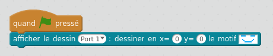

Défis matrice LED
Défi 1: afficher un dessin sur la matrice LED
Utiliser le mode connecté (cable USB branché sur le robot).
Afficher un dessin sur la matrice LED.
Attention, le port sélectionné doit correspondre au branchement de la matrice LED sur le robot.

Défi 2: faire clignoter la matrice LED avec un dessin
Utiliser le mode connecté (cable USB branché sur le robot).
Faire clignoter un dessin sur la matrice LED. Le dessin doit s'afficher pendant 1 seconde
puis disparaitre pendant 1 seconde, puis s'afficher à nouveau pendant 1 secondes, et ainsi de suite
sans jamais s'arrêter.
Défi 3: écrire un mot sur la matrice LED et le faire défiler
Utiliser le mode connecté (cable USB branché sur le robot).
Faire apparaître un mot sur la matrice LED. Le mot doit défiler petit à petit de la gauche vers la droite.
Il faut utiliser la valeur de x pour faire bouger le mot. Lorsque x vaut 0, le mot est à gauche de la matrice; si x augmente le mot sera déplacé sur la droite.
Il faut utiliser une variable pour faire varier x et déplacer ainsi le mot.